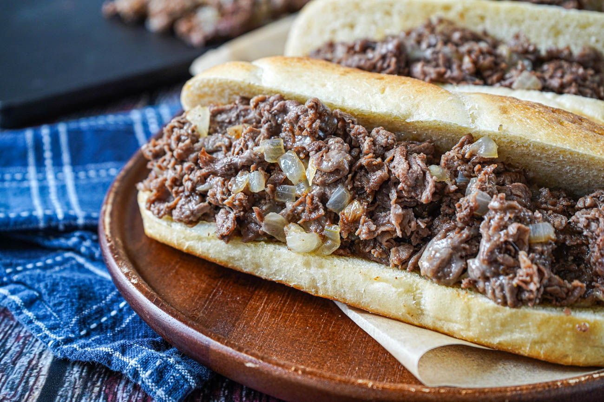

Cheesesteak

Description
My home town's favorite sandwich is the Philly cheesesteak.
a sandwich of beef, choice of cheese, optional onions all on a hoagie roll.
My personal order Provolone wit (provolone cheese with onions).
Ingredients
- 1 pound ribeye steak
- 1 sweet onion
- 12 slices of provolone cheese
- 4 hoagie rolls
- 1 tablespoon cooking oil
- salt
- ground pepper
Instructions
- Slice rolls, dice onions and chop steak into small thin pieces.
- Oil to flat cooktop. Caramelize onions. Salt and pepper to taste.
- On separate part of cooktop saute steak and season with salt and pepper.
- When both are cooked combine steak and onions on cooktop and separate into four servings.
- lay 3 pieces of cheese and a roll on each serving.
- When cheese is melted take spatula and flip sandwiches to serve.